Introduction
El auge de la construcción de grandes obras de ingeniería ha impulsado la demanda del acero, lo que ha generado un
incremento en la producción de residuos siderúrgicos, situación que causa problemas ambientales debido a su
acumulación y no disposición adecuada. Igualmente, la explotación de recursos naturales no renovables como los
agregados pétreos están generando deterioro en el medio ambiente; si a esto le sumamos que las regulaciones
ambientales para la explotación de estos materiales no renovables son cada vez más estrictas generando incremento
significativo en los costos de producción [1]. En consecuencia, esto lleva a un cambio de
paradigma: utilizar materiales no convencionales y emplear técnicas de reciclajes de los pavimentos existentes.
Durante el proceso de la fabricación de acero se producen diferentes residuos entre los cuales se encuentran las
escorias, [2][3]. Las más conocidas son la escoria de alto horno (BFS), escoria
de horno al oxígeno (BOF) y escoria
de horno eléctrico (EAF) [4]. La escoria BOF es producida en siderúrgicas integradas durante el proceso de
transformación del arrabio, proveniente del alto horno, en acero; el arrabio reacciona con cal, silicatos, óxidos de
aluminio, óxidos de manganeso y ferritas dependiendo de la calidad de acero que se produzca [5].
En Colombia la única siderúrgica integrada es Acerías Paz del Río S.A., ubicada en el Departamento de Boyacá, en
donde la producción de BOF es de aproximadamente 72000 toneladas por año [6]. Debido a la poca
utilización de este
residuo y a la mala disposición generan un problema para el medio ambiente. Teniendo en cuenta lo anterior, surge la
necesidad de buscar un uso alternativo a este residuo siderúrgico e incorporarlo a la economía circular, la cual
permite responder a las necesidades económicas y ambientales. Además, la construcción y mantenimiento de carreteras
incrementa el uso de agregados naturales no renovables los cuales podrían ser sustituidos por este residuo.
El objetivo de este trabajo es evaluar la factibilidad de reemplazar parcial o totalmente el agregado natural por
escoria BOF como agregado grueso, en concretos asfálticos, cumpliendo con los requisitos técnicos y ambientales.
La investigación se desarrolló en tres etapas. En primer lugar, conocer las características físicas y químicas de
los materiales empleados. La escoria BOF y los agregados naturales se caracterizaron por fluorescencia de rayos X
(XRF) y en el microscopio electrónico de barrido (SEM); se obtuvieron los elementos químicos presentes y la
microtopografia. La caracterización física y mecánica se realizó de acuerdo con las normas ASTM [7], [8] e INVIAS
[9] teniendo en cuenta los ensayos para agregados pétreos a utilizar en mezclas asfálticas. En
segundo lugar, se
diseñaron las mezclas con la metodología Ramcodes [10]: Una mezcla de control preparada con
agregados naturales
(grava y arena) y dos mezclas en las cuales se reemplazaran parcial y totalmente el agregado natural por BOF. Se
realizaron ensayos de verificación de vacíos y análisis de estabilidad y flujo para comprobar el cumplimiento de las
especificaciones [11]. Luego se efectuaron las pruebas de módulo dinámico y leyes de fatiga. Por
último, los
resultados se analizaron y se utilizaron para determinar la viabilidad del uso de BOF en la fabricación de concreto
asfáltico para su uso en la construcción de carreteras.
Materiales y Metodología
Materiales.
La escoria de horno al oxigeno BOF, Figura 1, se obtuvo de la siderúrgica Acerías Paz del Río S.A.; la piedra caliza
fue elegida como agregado grueso y la arena como agregado fino para la mezcla de referencia, estos materiales fueron
suministrados por la cantera la Roca del municipio de Moniquirá en el departamento de Boyacá. El cemento asfáltico
utilizado fue de penetración 80/100, procedente de IncoAsfaltos S.A.S., en Colombia. La mezcla asfáltica elegida
para el desarrollo de la investigación fue una MDC-19, de acuerdo con las especificaciones INV E-450-13, para un
nivel de tránsito NT3 (ESALs>5.0x106) [12].
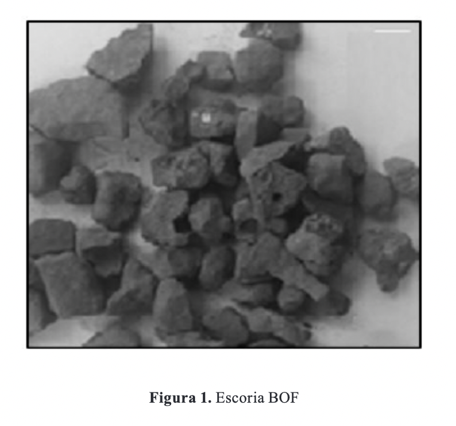
Metodología
Caracterización química de los materiales
Morfología y composición química de los agregados. Las partículas de grava, escoria BOF, arena y BFD, se sometieron
a un examen microscópico para caracterizar su forma y textura superficial. El examen se realizó con el microscopio
electrónico de barrido (SEM) Leo 410, con vacío de cámara de 9.85E-5 Torr, corriente en el filamento de 1.2 nA y
voltaje en el ánodo de 15 kV.
La evaluación de la composición química se realizó usando análisis de fluorescencia de rayos X (XRF), empleando un
espectrómetro secuencial Rigaku Primus II con tubo de rodio y ventana de berilio de 30 micras.
Diseño de las mezclas
El tipo de concreto asfáltico elegido para el desarrollo de la investigación fue MDC-19 de acuerdo al artículo 450
de las especificaciones generales de construcción de carreteras del Instituto Nacional de Vías [12]. De acuerdo con
el objetivo de la investigación, se reemplazó parcial y totalmente los agregados convencionales por los residuos
siderúrgicos. Esta dosificación se planteó teniendo en cuenta que investigaciones similares han sustituido el
agregado convencional en proporciones inferiores al 50% y no han considerado la sustitución total del agregado
convencional.
Las mezclas se diseñaron siguiendo el método de diseño Ramcodes. En el caso particular de las mezclas asfálticas,
Ramcodes cuenta con una herramienta de análisis muy poderosas, como es el polígono de vacíos [13]. El polígono de
vacíos es una construcción gráfica completamente automatizada que permite obtener un contenido óptimo de cemento
asfáltico basado en las especificaciones de vacíos y en las gravedades específicas de los agregados y del cemento
asfáltico. Luego se verifica apenas con la elaboración y ensayo de tres briquetas, en lugar de quince o doce, con
los procedimientos tradicionales de los métodos Marshall o Superpave, respectivamente. Se ha comprobado que los
resultados con esta metodología son muy similares a los obtenidos con la metodología Marshall [14].
Para el diseño de las mezclas se tuvo en cuenta realizar tres tipos de mezclas. La primera usando materiales
convencionales (piedra caliza como agregado grueso y arena como agregado fino) identificada como mezcla M1, como
mezcla de control; la segunda, sustituyendo el agregado grueso por BOF en un 50%, identificada como mezcla M2; la
tercera, sustituyendo en su totalidad el agregado grueso por BOF, denominada mezcla M3
Módulo dinámico
Para determinar el módulo dinámico de las mezclas asfálticas del estudio, se fabricaron tres probetas por cada tipo
de mezcla, las cuales fueron ensayadas mediante el procedimiento de la norma prNE-12697-26-Anexo C [15] en el equipo
Nottingham Asphalt Tester (NAT). Las probetas fueron elaboradas con la fórmula de trabajo y compactadas con el
compactador giratorio para todos los casos. Con esta prueba se determina el módulo dinámico de una probeta tipo
Marshall, por medio del principio de tensión indirecta. El principio enuncia que, al aplicar una carga compresiva a
través del diámetro de una muestra cilíndrica se produce una tensión sobre un diámetro ortogonal al cual se aplica
la carga. Al registrar la carga vertical aplicada y la deformación horizontal producida se obtiene el módulo
dinámico.
Teniendo en cuenta que el ensayo es no destructivo, las probetas fueron ensayadas a 5 °C, 25 °C y 40 °C y a una
frecuencia de 10 Hz. Se aplicaron 10 impulsos de acondicionamiento para permitir el ajuste del equipo, seguidamente
se realizó la aplicación de los impulsos de carga a la probeta a lo largo del primer plano diametral, luego se rotó
90 ° y se repitió el procedimiento.
El módulo dinámico depende de la temperatura del ensayo. Con base en los valores de los ensayos realizados y
aplicando la técnica de regresión por mínimos cuadrados, se ajusta a una función matemática del tipo dado en la
ecuación 1, esta ecuación representa el comportamiento del módulo resiliente para cada mezcla.
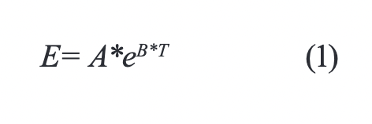
Donde,
E es el módulo dinámico a la temperatura T
T es la temperatura de la mezcla
A y B son constantes de regresión
Fatiga
La fatiga en mezclas asfálticas ocurre debido al incremento de grietas, estas grietas comienzan como vacíos de aire
que se comprimen durante el proceso de compactación y como defectos en el cemento asfáltico. El crecimiento de las
grietas puede ocurrir como fisuras adhesivas y cohesivas dentro de la mezcla. La fisura adhesiva ocurre en las
películas delgadas de cemento asfáltico que cubre los agregados y se desarrollan en la interface entre el agregado y
el cemento asfáltico. La fisura cohesiva ocurre dentro del cemento asfáltico en las películas más gruesas [16].
Este ensayo tiene por objeto determinar el número de ciclos (de una determinada carga) necesarios para llegar a la
falla de una briqueta. Se realizó bajo la norma BS-EN 12697-24 Anexo E, a una temperatura de 20 °C, una frecuencia
de 2.5 Hz y bajo condiciones de esfuerzo controlado con el equipo NAT.
Se fabricaron ocho probetas para cada tipo de mezcla con el respectivo asfalto óptimo obtenido y su correspondiente
composición granulométrica. Las briquetas elaboradas se dividen en cuatro grupos, cada grupo de dos probetas fueron
sometidas al ensayo a distintas cargas; las cargas seleccionadas fueron en el rango de 250 kPa, a 350 kPa
respectivamente. A cada briqueta sometida a este ensayo se le determinó la vida hasta la rotura a partir del número
de aplicaciones de carga que causan la rotura. El esfuerzo en el centro de la briqueta se calculó con la ecuación 2
y la deformación máxima por tracción se calculó a partir de la ecuación 3.
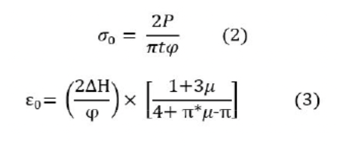
Donde
σ0 es el esfuerzo de tracción en el centro de la probeta (MPa)
P es la carga máxima (N)
t es el espesor de la probeta (mm)
φ es el diámetro de la probeta (mm)
ε0 es la deformación por tracción en el centro de la probeta (μɛ)
∆H es la deformación horizontal (mm)μ es el coeficiente de Poisson
Para la obtener las leyes de fatiga para la predicción de la vida de fatiga, se utilizó la ecuación 4, de Wholer [17].
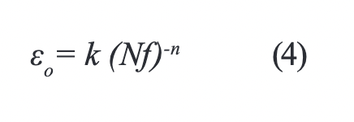
Donde
Nf es la cantidad de ciclos de carga hasta la falla por fatiga
k y n son constantes del material
ε₀ es la deformación horizontal de tracción inicial en el centro de la muestra en με.
Resultados y Análisis
Caracterización química de los materiales
Morfología microscópica.
La figura 2 presenta micrografías SEM de los materiales usados, se muestra la forma y textura de la superficie de
las partículas de la arena, la grava y la escoria BOF. La figura 2(a) es la micrografía SEM de la arena, la cual
muestra que la textura superficial es áspera y presenta bordes de forma angulosa. La figura 2(b) es la micrografía
SEM de la grava, la textura superficial es áspera, presenta bordes de forma angulosa y subredondeados. La figura
2(c) es la micrografía SEM de la escoria BOF, la textura es áspera, presenta bordes menos angulares y más
redondeados, presenta poros superficiales y es más áspera que el agregado natural [18], a estas características de
la textura y rugosidad se le puede atribuir un fuerte enlace y una excelente zona interfacial para el cemento
asfáltico [19].
Composición química
La composición química de la escoria BOF, la grava y la arena detectados por XRF se muestra en la tabla III. Los
principales constituyentes químicos de la grava son CaO, SiO2 y Al2O3. La escoria BOF se produce de convertir el
arrabio, procedente del alto horno, en acero y la composición química depende la calidad y tipo de acero producido.
Los principales componentes de la escoria BOF son CaO, Fe2O3, SiO2 y Al2O3. En comparación de la grava con la
escoria, el componente principal en la grava es CaO con más del 50%, lo anterior debido a su origen calizo.
Aunque Fe2O3 también aparece como componente en la grava, el porcentaje en peso es muy inferior en comparación al
porcentaje de la escoria. Al contenido de CaO se le puede atribuir una mejor adherencia entre el agregado y el
cemento asfáltico [18]. La escoria BOF presentará una buena adhesión con el cemento asfáltico ya
que presenta buen contenido de CaO.
La relación CaO/SiO2 considera el nivel de alcalinidad del agregado, relaciones altas conducen a una afinidad mayor
entre el agregado y el cemento asfáltico [20]. La escoria BOF presenta una relación CaO/SiO2 de
4.3, más alta que la relación en la grava que es de 3,8. En consecuencia, la escoria BOF tiene mejor afinidad con el
cemento asfáltico.
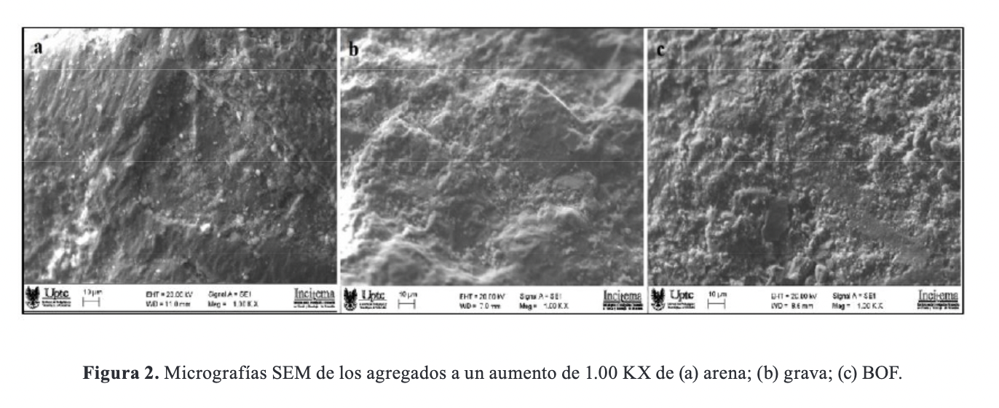
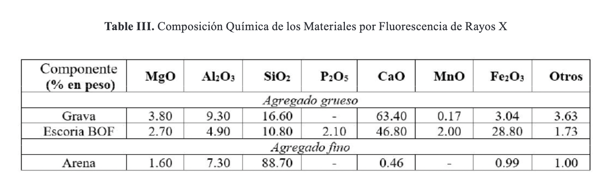
La tabla IV muestra la composición química de escoria BOF de varias fuentes, con el interés de comparar la
composición química de la escoria BOF utilizada en esta investigación.
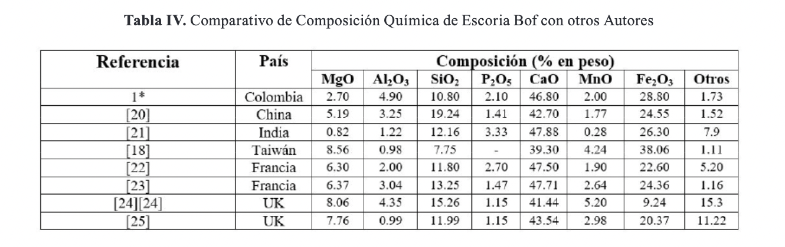
Caracterización mecánica de los materiales
Los resultados de la caracterización de los materiales utilizados se muestran en la tabla I. Los materiales cumplen
con los requerimientos exigidos por las especificaciones. La escoria BOF presenta características similares a las
del agregado grueso convencional. Sin embargo, por su característica superficial presenta una absorción más elevada.
La caracterización del cemento asfáltico muestra que los resultados están dentro de los límites de la especificación
y se muestran en la tabla II.
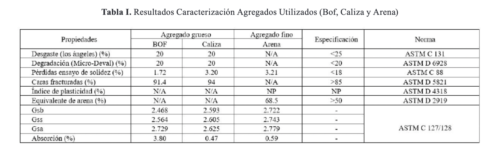
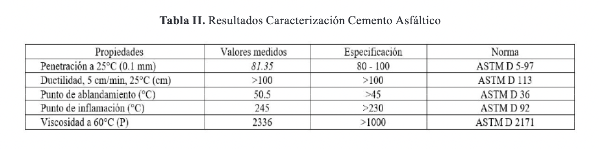
Diseño de las mezclas
El primer paso consistió en realizar la dosificación granulométrica para cada mezcla. Seguidamente, se procede a
determinar el contenido óptimo de ligante con la metodología Ramcodes, teniendo los resultados de caracterización de
los agregados y el ligante. Esta metodología consiste en realizar un análisis de vacíos en la mezcla, como son:
vacíos de aire (Va), vacíos en el agregado mineral (VMA) y vacíos llenos de asfalto (VFA), los cuales relacionan el
comportamiento de las mezclas compactadas. Los vacíos son función del porcentaje de cemento asfáltico (%Pb) y de la
gravedad específica bulk de la mezcla (Gmb), los cuales se representa en mapas con isolíneas para los valores
permitidos en las especificaciones.
La intersección de esas líneas produce una construcción grafica en el espacio %Pb-Gmb, que da lugar al polígono de
vacíos. El centroide de dicho polígono establece el contenido óptimo de ligante y la gravedad especifica bulk
(densidad). En la Figura 3 se muestra como ejemplo el polígono de vacíos para la mezcla M1.
Siguiendo los pasos de Ramcodes, con el contenido óptimo de asfalto y la combinación de agregados se elaboraron tres
probetas. A las cuales se les realizaron los ensayos de estabilidad, flujo y análisis de densidad y vacíos. El
promedio de los resultados obtenidos en los ensayos, mostró que el valor de flujo (3.6 mm) no cumplía el
requerimiento para el nivel de tránsito especificado (2.0 a 3.5 mm). Teniendo en cuenta la recomendación de la
metodología [13][26] y considerando que el valor de flujo está muy cerca del
límite superior del requerimiento, se realizó un nuevo intento bajando el contenido de asfalto a 4,8 % y con la
misma combinación de agregados, se fabricaron tres nuevas probetas. Con este porcentaje de asfalto se cumple todos
los requerimientos. Para la mezcla M2, el centroide define un porcentaje óptimo de asfalto de 4.9 % y para la mezcla
M3 un porcentaje óptimo de asfalto de 5.1%. En la tabla V se muestran los resultados del diseño preliminar de cada
una de las mezclas.
El contenido de asfalto es similar para las tres mezclas. Sin embargo, se presenta un pequeño incremento en las
mezclas M2 y M3; lo que se puede atribuir a la mayor absorción de la escoria BOF. La mezcla M2 presentó una
estabilidad levemente inferior (2.3%) a la de la mezcla base y superior en 29.9% respecto al mínimo requerido. La
mezcla M3 presentó una estabilidad levemente superior (2.8%) a la estabilidad de la mezcla base y superior en 36.7%
con respecto a los 9000 N exigidos en las especificaciones. El comportamiento de la estabilidad en estas mezclas
puede ser atribuido a la mayor afinidad y buena adhesión de la escoria BOF con el cemento asfáltico.
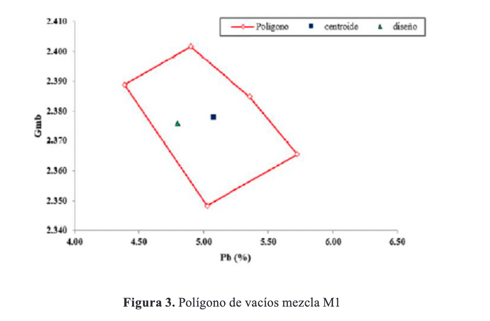
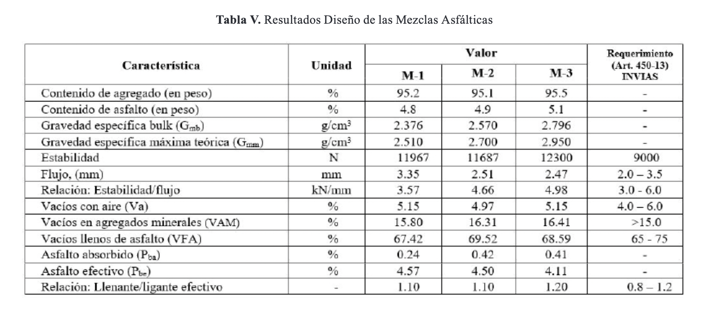
Módulo dinámico
El módulo es una propiedad importante del concreto asfáltico en cualquier procedimiento mecanicista de diseño y
análisis de pavimentos flexibles. El módulo dinámico es la propiedad del material requerida en el método empírico de
diseño AASHTO y es un parámetro importante de entrada en la guía de diseño empírico-mecanicista. Este parámetro se
ha constituido como un elemento fundamental en el diseño de pavimentos, por lo que ha sido introducido como un
elemento que caracteriza de manera racional el comportamiento esfuerzo-deformación de los materiales que conforman
la estructura [28].
La figura 4 presenta las líneas de tendencia del módulo para cada una de las muestras en estudio. Así como el valor
del módulo para una temperatura de la mezcla de 20°C, considerando la temperatura a la cual va a estar trabajando la
mezcla en una región con TMAP de 13°C. El módulo dinámico de la mezcla base (M1) es de 3351 MPa, siendo este el
valor más alto de las mezclas ensayadas. Para las mezclas M3 y M4, el valor obtenido del módulo es un poco menor con
valores de 3067 MPa y 3155 MPa respectivamente.
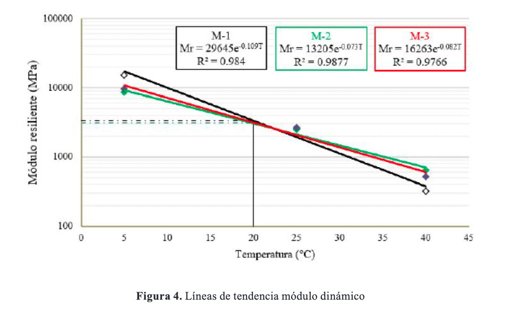
En las mezclas M2 y M3 el módulo dinámico obtenido para una temperatura de 20 °C es levemente inferior al módulo
resiliente de la mezcla base a la misma temperatura. De forma semejante, en el estudio realizado por [19], en el cual utilizaron escoria BOF como agregado grueso, reportaron un módulo un poco
superior al reportado en esta investigación.
Fatiga
La vida de fatiga se define como el número de ciclos de carga hasta donde ocurre la falla (Nf) y representa la
capacidad de la mezcla para soportar las cargas cíclicas del tránsito [29]. La figura 5 muestra
la deformación de tracción frente al número de ciclos para las mezclas en estudio. La figura también incluye las
ecuaciones de la ley de fatiga y el coeficiente de correlación (R2), lo que indica que existe correlación
estadística entre los resultados obtenidos para determinar cada ley de fatiga, dado que los coeficientes R2 son
superiores a 0.92.
Las leyes de fatiga de las mezclas M2 y M3 son similares entre sí y también similares a la ley de fatiga de la
mezcla base (M1). Las pendientes de las tres leyes de fatiga son similares. En consecuencia, las mezclas M2 y M3
presentan una mejor vida a fatiga por estar por encima de la ley de fatiga de la mezcla M1.
La figura 6 muestra las deformaciones iniciales para las mezclas y para tres diferentes ciclos de carga (Nf)
calculadas de acuerdo a la ecuación 4 de las leyes de fatiga.
Para 5.0x105 ciclos de carga, la mezcla M2 presentó la más alta deformación inicial (εο=201 με) la cual es 8.6 %
superior a la deformación inicial de la mezcla base (M1) para los mismos ciclos de carga. De igual forma, para
5.0x106 ciclos de carga la deformación inicial de la mezcla M2 es superior en 10.9 % respecto de la mezcla M1 para
el mismo número de ciclos de carga. Siguiendo la misma tendencia, para 5.0x107 ciclos de carga la mezcla M2 presentó
una deformación inicial superior en 13.2 % respecto a la mezcla M1 y para los mismos ciclos de carga. La mezcla M3
presentó las mismas deformaciones para los tres ciclos de carga que las mezclas M1.
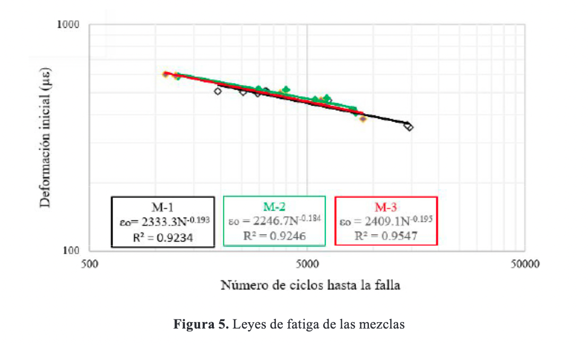
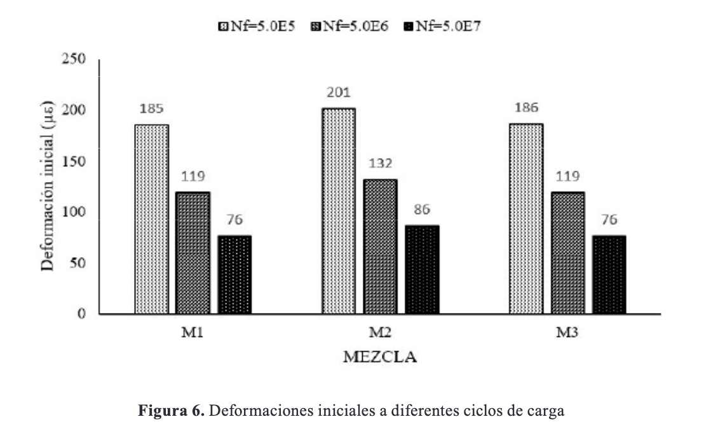
La vida de fatiga de la mezcla base y las demás mezclas a diferentes niveles de deformación se presentan en la
figura 7. Se puede observar que para una deformación εο=300 με, la mezcla M2 tiene vida a fatiga más alta que la
mezcla base (M1). A medida que se aumenta la deformación, es decir, a deformaciones altas presenta menor vida de
fatiga. La mezcla M3 independiente del nivel de deformación presenta una vida a fatiga similar que la mezcla base.
En general, la mezcla M2 presenta mejor vida a fatiga en todos los niveles de deformaciones que la vida a fatiga de
la mezcla base. Las mezclas M3 presenta igual vida a fatiga que la mezcla base. Por lo anterior, se puede intuir que
el reemplazo parcial y total de los agregados naturales por escoria BOF en concretos asfálticos aumenta un poco la
fatiga de las mezclas, lo que puede ser atribuido a la textura superficial de la escoria, a la fuerza de unión entre
el cemento asfáltico y la escoria atribuido a la alta alcalinidad de este material y a que está mezcla está
preparada con mayor porcentaje de cemento asfáltico.
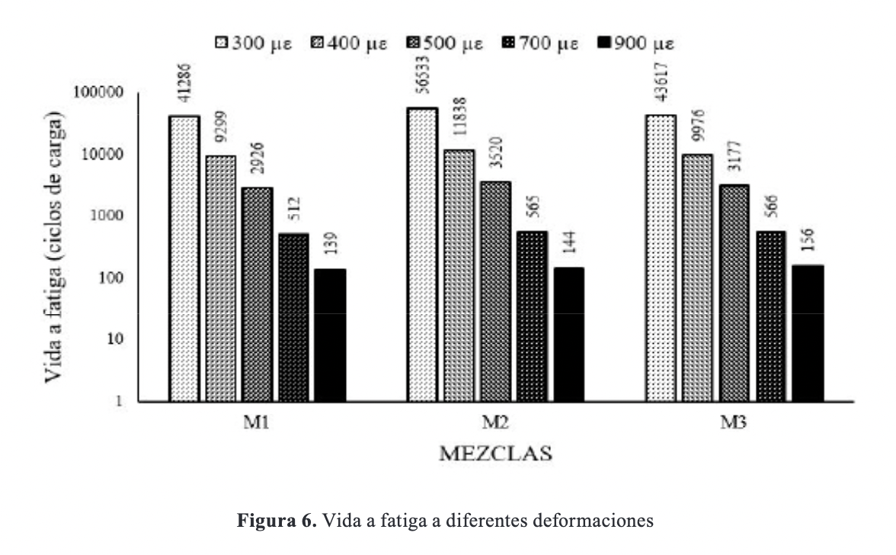
Conclusiones
Los ensayos realizados mostraron características favorables, muy parecidas y en algunos casos superiores al del
agregado natural. Para la escoria BOF, el resultado del ensayo de desgaste en la máquina de los Ángeles cumple con
el requerimiento establecido, pero es superior en 0.3 % respecto del agregado natural y el resultado del ensayo de
degradación por abrasión en el equipo Micro-Deval es superior en 0.9 % respecto del agregado natural y superior en
0.7 % respecto al requerimiento máximo exigido en la norma para un nivel de tránsito NT-3.
Entre los daños ambientales, generados por la explotación de recursos naturales no renovables como materiales de
construcción, cabe mencionar la deforestación propia en los procesos de explotación, pérdida en la biodiversidad y
la alteración de los ecosistemas, daños en acuíferos y ríos que afectan inmediatamente a la población que depende de
esta para cubrir sus necesidades básicas, etc. Sin embargo, la principal afectación es el consumo indiscriminado de
materiales que son no renovables como la grava y arena. Con la utilización de residuos siderúrgicos como BOF, se
disminuye la explotación de materiales no renovables como la grava, con consecuencias positivas que esto acarrea en
el ecosistema. Aunque la producción de BOF en la región (Boyacá) es bastante inferior a la explotación y producción
de materiales para construcción (grava), la reducción en el consumo de material tipo grava sería considerable.
En el caso de la estabilidad, el valor de estabilidad para la mezcla M2 disminuyó solo un 2.3 % en relación a la
mezcla base. El valor de estabilidad de la mezcla M3 aumentó 2.8 % en comparación con la mezcla base. De todos
modos, los valores de estabilidad de las mezclas M2 y M3 son superiores en 29.8 % y 36.7 % respectivamente respecto
a la estabilidad mínima requerida.
Los módulos dinámicos de estas mezclas son menores al módulo de la mezcla base. Sin embargo, los valores de módulo
resiliente de la mezcla en la cual se sustituyó parcialmente y la mezcla que se sustituyó totalmente el agregado
natural, son muy similares. El módulo resiliente disminuyó en 8.5 % y 5.8 % en la mezcla M2 y M3 respectivamente, en
comparación con el módulo resiliente de la mezcla base. Lo anterior, permite determinar que la utilización de
escoria BOF como agregado grueso tiene el mismo efecto que el agregado natural en el módulo dinámico.
Adicionalmente, la mezcla M2 presenta mejor vida a fatiga a bajas deformaciones que la mezcla base. A medida que
aumentamos el nivel de deformación, es decir, a deformaciones altas esta mezcla presenta menor vida a fatiga. De
igual forma, teniendo en cuenta el número de ciclos de carga la mezcla M2 resistirá mayores deformaciones iniciales.
La mezcla M3 presenta mayor vida a fatiga a bajas deformaciones en comparación con la mezcla M2 y la mezcla base, a
altas deformaciones la mezcla M3 presenta menor vida a fatiga que la mezcla base y un poco mayor que la mezcla M2.
Analizando la mezcla M3 y teniendo en cuenta el número de ciclos de carga, esta resistirá iguales deformaciones
iniciales que la mezcla base y menores respecto a la mezcla M2.
Las mezclas fabricadas con escoria BOF como agregado grueso ofrecen condiciones técnicas apropiadas para su
implementación en la construcción de estructuras de pavimento. Lo anterior, teniendo en cuenta los resultados de los
ensayos para determinar las características mecánicas y de desempeño.
Agradecimientos.
El autor agradece a la empresa Acerías Paz del Río S.A. por el apoyo y suministro del material. Al INCITEMA de la
Uptc, por el desarrollo de los ensayos de caracterización química del material. Al ingeniero Manuel Sierra,
coordinador del laboratorio de Pavimentos de la Uptc. Por último, a la escuela de Ingeniería en Transporte y Vías de
la Universidad Pedagógica y Tecnológica de Colombia.
References
[1] F. Rolón Nieto, “El auge de la construcción en Colombia: un crecimiento real del sector o una burbuja que puede estallar,” Dictam. Libr., vol. 10, no. 10, pp. 7–13, 2012.
[2] N. C. C. Lobato, E. A. Villegas, and M. B. Mansur, “Management of solid wastes from steelmaking and galvanizing processes: A brief review,” Resour. Conserv. Recycl., vol. 102, pp. 49–57, 2015, doi: 10.1016/j.resconrec.2015.05.025.
[3] M. Omran and T. Fabritius, “Effect of steelmaking dust characteristics on suitable recycling process determining: Ferrochrome converter (CRC) and electric arc furnace (EAF) dusts,” Powder Technol., vol. 308, pp. 47–60, 2017, doi: 10.1016/j.powtec.2016.11.049.
[4] C. Kambole, P. Paige-Green, W. K. Kupolati, J. M. Ndambuki, and A. O. Adeboje, “Basic oxygen furnace slag for road pavements: A review of material characteristics and performance for effective utilisation in southern Africa,” Constr. Build. Mater., vol. 148, pp. 618–631, 2017, doi: 10.1016/j.conbuildmat.2017.05.036.
[5] J. Xie et al., “Material characterization and performance evaluation of asphalt mixture Incorporating basic oxygen furnace slag (BOF) sludge,” Constr. Build. Mater., vol. 147, pp. 362–370, 2017, oi: 10.1016/j.conbuildmat.2017.04.131.
[6] O. González, “Producción residuos en Acerías Paz del Río S.A.,” in Entrevista, 2018.
[7] ASTM, “Section 04-Construction: Volume 04.02 Concrete and Aggregates. West Conshohocken, Pa,” 2005.
[8] ASTM, “Section 04-Construction: Volume 04.03 Road and Paving Materials. West Conshohocken. Pa,” 2005.
[9] Instituto Nacional de Vías INVIAS, “Normas para ensayos de materiales para carreteras,” Bogotá, 20
[10] F. Sánchez, P. Garnica, J. Gómez, and N. Pérez, “Ramcodes: Metodología racional para el análisis de densificación de geomateriales compactados.,” Sanfandila, Querétaro, 2002. [Online]. Available: https://imt.mx/archivos/Publicaciones/PublicacionTecnica/pt200.pdf.
[11] INVIAS, “Especificaciones generales de construcción de carreteras,” Bogotá, 2013. [Online]. Available: www.invias.gov.co.
[12] INVIAS, “Artículo 450-13 Mezclas asfálticas en caliente de gradación continua,” Bogotá, 2013.
[13] F. J. Sánchez-Leal, P. G. Anguas, M. Larreal, and D. B. L. Valdés, “Polyvoids : Analytical Tool for Superpave HMA Design,” J. Mater. Civ. Eng., vol. 23, no. 8, pp. 1129–1137, 2011, doi: 10.1061/(ASCE)MT.1943-5533.0000275.
[14] R. Ochoa and G. Grimaldo, “Validation of the polyvoids in the design of bituminous mixtures with coal tar as a binder,” Rev. Ing. Construcción, vol. 33, pp. 137–146, 2018, [Online]. Available: http://www.ricuc.cl/index.php/ric/article/view/827/pdf.
[15] A. E. de N. y certificación AENOR, “Mezclas bituminosas. Métodos de ensayo para mezclas bituminosas en caliente. Parte 26: Rigidez,” madrid, UNE-EN 12697-26, 2012. [Online]. Available: www.awenor.es.
[16] R. L. Lytton, Y. Zhang, X. Luo, and R. Luo, The fatigue cracking of asphalt mixtures in tension and compression. Elsevier Ltd., 2015.
[17] A. R. Pasandín and I. Pérez, “Fatigue performance of bituminous mixtures made with recycled concrete aggregates and waste tire rubber,” Constr. Build. Mater., vol. 157, pp. 26–33, 2017, doi: 10.1016/j.conbuildmat.2017.09.090.
[18] D. H. Shen, C. M. Wu, and J. C. Du, “Laboratory investigation of basic oxygen furnace slag for substitution of aggregate in porous asphalt mixture,” Constr. Build. Mater., vol. 23, no. 1, pp. 453–461, 2009, doi: 10.1016/j.conbuildmat.2007.11.001.
[19] S. Amelian, M. Manian, S. M. Abtahi, and A. Goli, “Moisture sensitivity and mechanical performance assessment of warm mix asphalt containing by-product steel slag,” J. Clean. Prod., vol. 176, pp. 329–337, 2018, doi: 10.1016/j.jclepro.2017.12.120.
[20] J. Xie, S. Wu, J. Lin, J. Cai, Z. Chen, and W. Wei, “Recycling of basic oxygen furnace slag in asphalt mixture: Material characterization & moisture damage investigation,” Constr. Build. Mater., vol. 36, pp. 467–474, 2012, doi: 10.1016/j.conbuildmat.2012.06.023.
[21] B. Das, S. Prakash, P. S. R. Reddy, and V. N. Misra, “An overview of utilization of slag and sludge from steel industries,” Resour. Conserv. Recycl., vol. 50, no. 1, pp. 40–57, 2007, doi: 10.1016/j.resconrec.2006.05.008.
[22] P. Y. Mahieux, J. E. Aubert, and G. Escadeillas, “Utilization of weathered basic oxygen furnace slag in the production of hydraulic road binders,” Constr. Build. Mater., vol. 23, no. 2, pp. 742–747, 2009, doi: 10.1016/j.conbuildmat.2008.02.015.
[23] J. Waligora, D. Bulteel, P. Degrugilliers, D. Damidot, J. L. Potdevin, and M. Measson, “Chemical and mineralogical characterizations of LD converter steel slags: A multi-analytical techniques approach,” Mater. Charact., vol. 61, no. 1, pp. 39–48, 2010, doi: 10.1016/j.matchar.2009.10.004.
[24] H. Y. Poh, G. S. Ghataora, and N. Ghazireh, “Soil Stabilization Using Basic Oxygen Steel Slag Fines,” no. April, pp. 229–240, 2006.
[25] L. M. Juckes, “The volume stability of modern steelmaking slags,” vol. 9553, no. January, 2017, doi: 10.1179/03719550322500370.
[26] F. J. Sánchez-Leal, “Manual de Aplicación - Metodología de Analísis y Diseño de Geomateriales Compactados,” 2009.
[27] F. J. Sánchez-Leal, “Diseño acelerado de Mezclas Asfálticas con el Polígono de Vacíos. Metodología Ramcodes,” in Curso, 2018.
[28] F. Elizondo, G. Badilla, and Á. Ulloa, “Predicción de módulos resilientes en mezclas asfálticas mediante el modelo de Witczak,” Rev. Infraestruct. Vial, no. 19, pp. 40–50, 2008.
[29] N. Li, A. A. A. Molenaar, M. F. C. Van De Ven, and S. Wu, “Characterization of fatigue performance of asphalt mixture using a new fatigue analysis approach,” Constr. Build. Mater., vol. 45, pp. 45–52, 2013, doi: 10.1016/j.conbuildmat.2013.04.007.

 PhD. en Ingeniería y Ciencia de los Materiales,
ricardo.ochoa@uptc.edu.co.
PhD. en Ingeniería y Ciencia de los Materiales,
ricardo.ochoa@uptc.edu.co.
 ORCID:
0000-0003-1151-7884.
Universidad Pedagógica y Tecnológica de Colombia, Colombia.
ORCID:
0000-0003-1151-7884.
Universidad Pedagógica y Tecnológica de Colombia, Colombia.